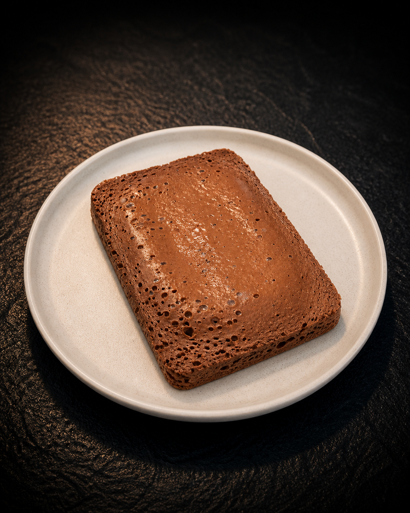

Bowlcake cacao banane

Version avec whey
Ingrédients
- 8 g de cacao non sucré
- 2 blancs d'œuf
- 1 œuf entier
- 1 banane
- 40 g de flocons d'avoine
- 100 g de skyr
- 1 scoop de whey
Préparation
- Mixer tous les ingrédients dans un blender jusqu'à obtenir une pâte homogène.
- Verser la préparation dans un plat assez grand et peu profond pour mieux répartir la cuisson.
- Cuire 2 à 3 minutes au micro-ondes, ou 15 minutes au four classique à 180°C.
Valeurs nutritionnelles (approx.)
Par portion : 560 kcal • 57 g protéines • 11 g lipides • 54 g glucides • 8 g fibres
Version sans whey
Ingrédients
- 8 g de cacao non sucré
- 2 blancs d'œuf
- 1 œuf entier
- 1 banane
- 40 g de flocons d'avoine
- 100 g de skyr
Préparation
- Mixer tous les ingrédients dans un blender jusqu'à obtenir une pâte homogène.
- Verser la préparation dans un plat assez grand et peu profond pour mieux répartir la cuisson.
- Cuire 2 à 3 minutes au micro-ondes, ou 15 minutes au four classique à 180°C.
Valeurs nutritionnelles (approx.)
Par portion : 450 kcal • 36 g protéines • 11 g lipides • 53 g glucides • 8 g fibres